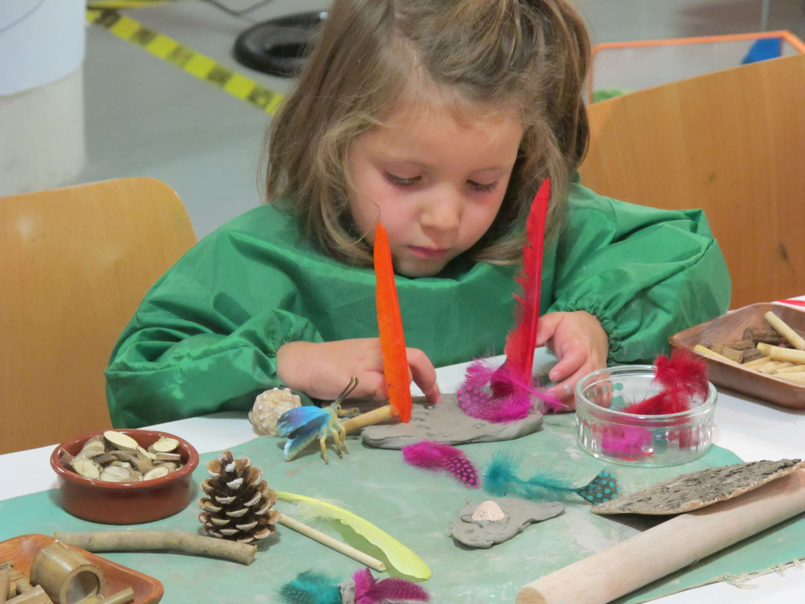
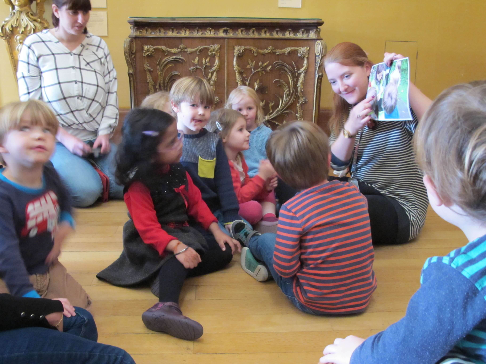
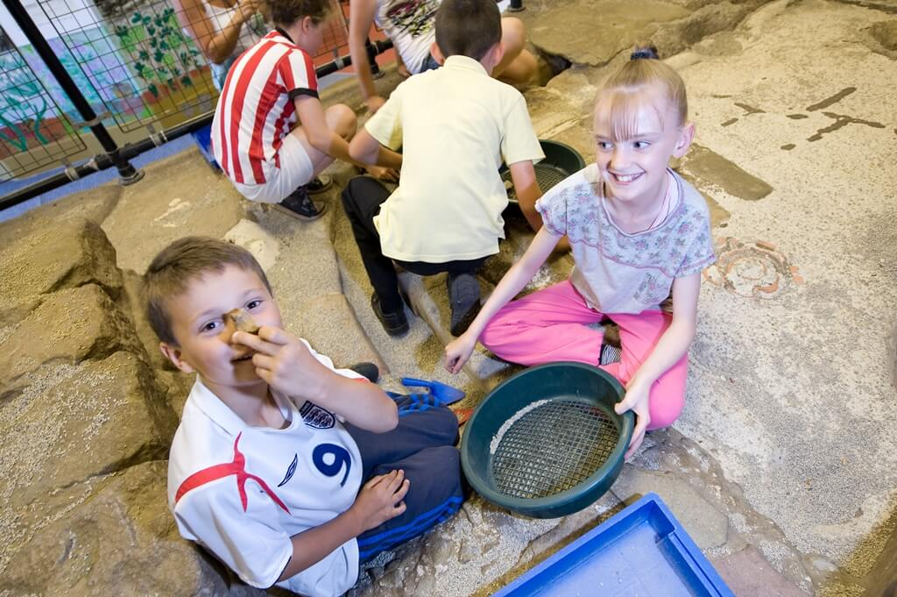
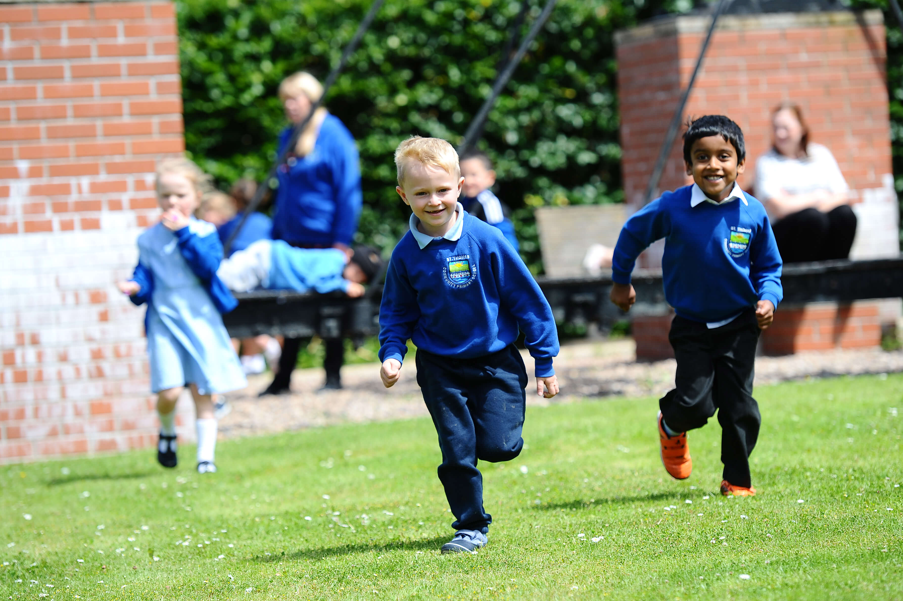

My Primary School is at the Museum
How We Do It:
Bridging Worlds
At MPSM, we don’t just visit museums; we inhabit them. Our work transforms galleries into classrooms and artefacts into teachers.
Join Our Mission Download OverviewResearch & Evaluation
MPSM has already inspired teachers, school leaders and academics to explore the potential of museum-based learning through research and evaluation.
We live in a world where children are surrounded by information, which can sometimes feel overwhelming and distracting. MPSM offers a different approach, bringing depth of focus alongside a rich diversity of subjects. By working directly with physical objects and artefacts, children are encouraged to observe, question, investigate and make their own discoveries.
The approach also opens up exciting possibilities for research across a wide range of cultural, natural and historic settings. As projects develop, so too does our understanding of how immersive, object-based learning can enrich children's education and deepen their connection with the world around them.

Partnerships
MPSM is built on a rich network of social, professional and academic partnerships. At its heart is the relationship between a museum, botanic garden or other heritage setting and a primary school or early years setting. But that is just the beginning.
As children become immersed in their new learning environment, relationships grow well beyond the classroom. Parents, carers and extended families become part of the experience, as children develop a sense of ownership of the setting and are eager to share what they discover with those at home.
The benefits extend to teachers too. Working in a new environment brings fresh perspectives, strengthens professional relationships and offers a valuable form of continuing professional development. Museums and heritage organisations, in turn, build stronger connections with families and their surrounding communities.
Academic institutions, including teacher training colleges, also play an important role in supporting and facilitating projects. These partnerships create opportunities for research while inspiring future teachers to make greater use of local heritage settings to enrich children's understanding of history, place and the world around them.
View our Partnership Planning Flowchart
International Collaboration
What began as a project in the UK has grown into an international approach to museum-based learning, with projects now established in England, Scotland and Wales.
Interest has spread organically, leading to invitations to share the MPSM approach in the Republic of Ireland, Norway and Germany. These conversations have opened doors to new curricula, professional networks and academic institutions interested in exploring the model.
Different countries bring different educational traditions and perspectives, creating exciting opportunities to share experiences, compare approaches and learn from one another. Two international collaborations are currently seeking funding to take this work further, extending the research and development of MPSM across national boundaries.
Explore Our Projects
Guidance & Practice
As more MPSM projects emerge and develop, so too does our understanding of what makes them successful. Each experience brings opportunities for reflection, evaluation and refinement, helping us continually improve the approach.
Teachers, museum professionals and other project partners have contributed to the development of toolkits, guidance documents and published articles, capturing the learning, benefits and impacts of projects to date.
We continue to build on this growing body of knowledge, developing resources and sharing recommendations that support future partnerships. In doing so, we are strengthening the evidence base for museum-based learning and helping others bring the MPSM approach to life.
Explore Our Publications